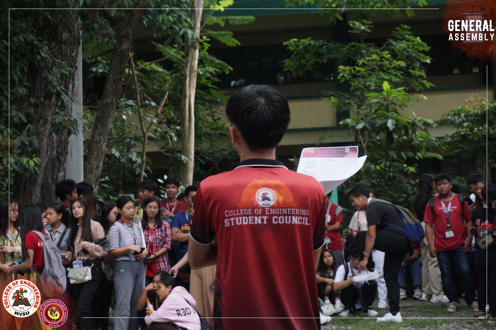
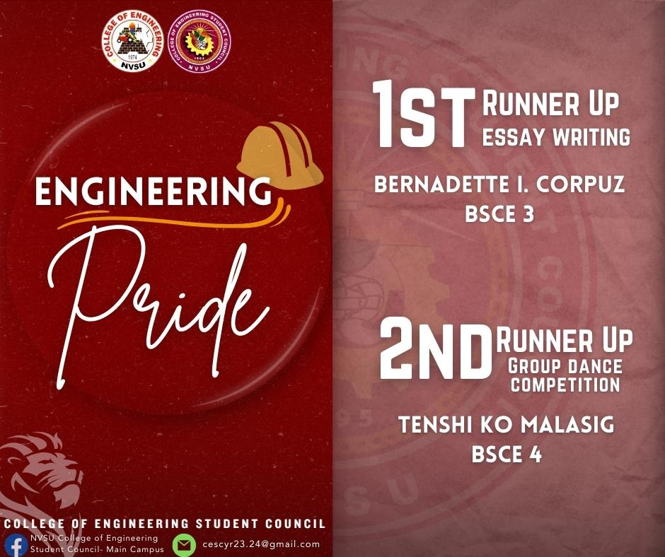
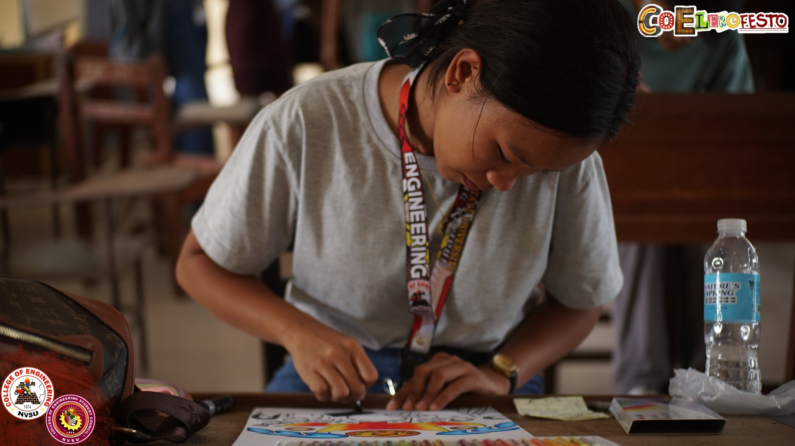
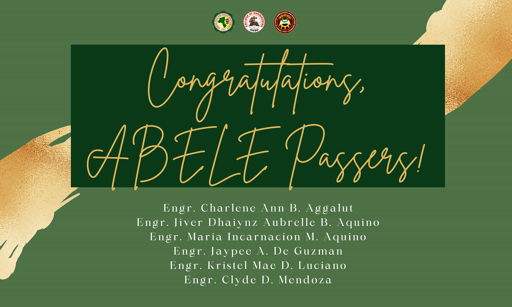
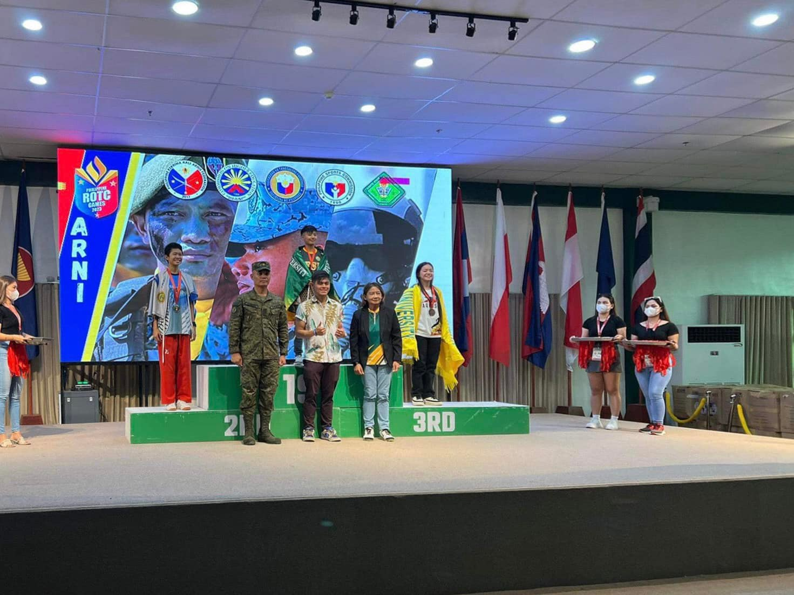
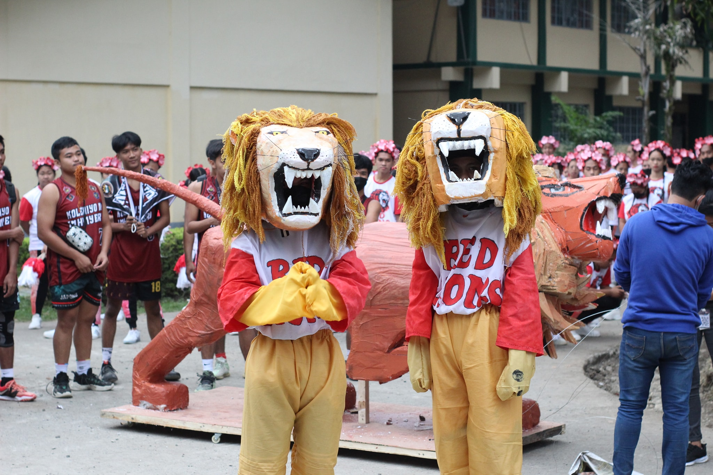
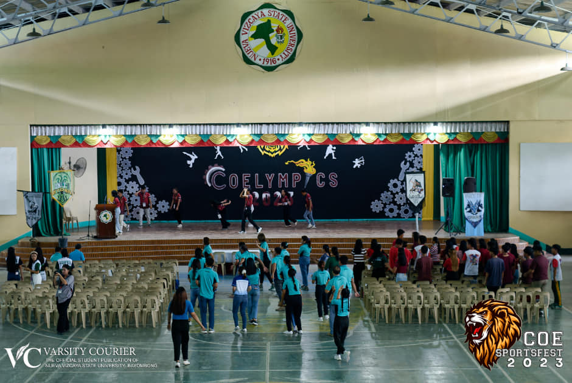

News & Achievements |
|||||||||||
|  | 𝐎𝐜𝐭𝐨𝐛𝐞𝐫 𝟎𝟒, 𝟐𝟎𝟐𝟑 |
||||||||||
|  | Two students from the College of Engineering reaped awards during the Transforming Advocates and Champions Inc. - 3rd International Convention on Student Affairs and Services with the theme, "Accelerating Student Affairs and Services Programs and Services Toward Attaining Sustainable Development Goals, " held at Teacher's Camp, Baguio City, September 29 - October 1. continue reading... |
||||||||||
|  | 𝗖𝗮𝗽𝘁𝘂𝗿𝗶𝗻𝗴 𝘁𝗵𝗲 𝗘𝘀𝘀𝗲𝗻𝗰𝗲 𝗼𝗳 𝗖𝗿𝗲𝗮𝘁𝗶𝘃𝗶𝘁𝘆! Our engineering students are not just experts in numbers and equations; they are also masters of color, melody, and innovation. continue reading... |
||||||||||
|  | 𝐓𝐀𝐓𝐀𝐊 𝐀𝐁𝐄! 𝐓𝐀𝐓𝐀𝐊 𝐁𝐀𝐘𝐀𝐖!! "Passing the Agricultural and Biosystems Engineering licensure exam is like planting the seeds of expertise. Now, it's time to watch your career flourish and bear fruit." 𝐂𝐨𝐧𝐠𝐫𝐚𝐭𝐮𝐥𝐚𝐭𝐢𝐨𝐧𝐬 to our new Agricultural and Biosystems Engineers from the Nueva Vizcaya State University- Bayombong Campus. continue reading... |
||||||||||
|  | Congratulations are in order to Augustina B. Agamas, a 2nd year Bachelor of Science in Agricultural & Biosystems Engineering student at the College of Engineering continue reading... |
||||||||||
|  | KO-LEON NG INHINYERO! 🦁 The making of the College of Engineering's trademark, Lion Mascot, for the 2022 NVSU-Bayombong Intramural Meet. continue reading... |
||||||||||
|  | 2023 COElympics, ikinampay Tampok sa 2023 College of Engineering (COE) Sportsfest na may temang, 'Engineering Sportsfest, One Team, One Goal' ang mga inhinyerong atleta mula sa iba't-ibang unit matapos iwagayway ang kanilang lakas at talento sa mga isports, Sept. 19. continue reading... |